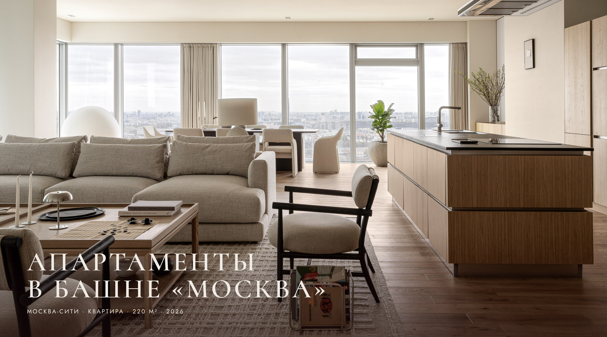
Москва-Сити · Квартира · 220 м² · 2026
Обычно мы начинаем проект с человека — кто здесь будет жить и что для него важно. В этот раз задача была обратной: сделать интерьер так, чтобы он подошёл многим, был универсальным. Апартаменты больше двадцати лет сдавались в аренду — отделка и сантехника были изношены до предела, интерьер тоже. Владелец устал от рутины арендного управления и решил квартиру продать. Дальше была развилка, знакомая многим собственникам: продавать «как есть» с большим дисконтом или сделать достойный ремонт и выйти на адекватную рынку цену. Выбрали второе — отсюда и вся стратегия проекта.
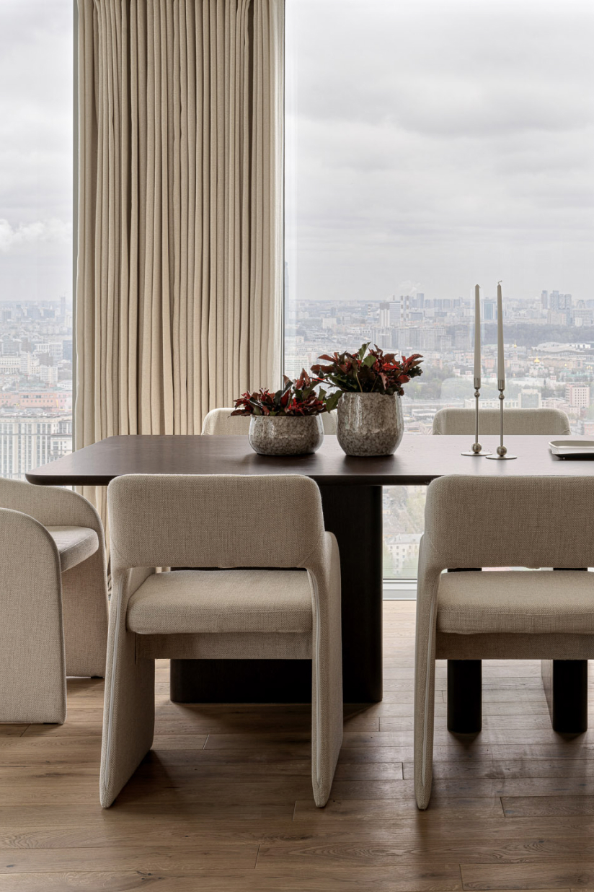
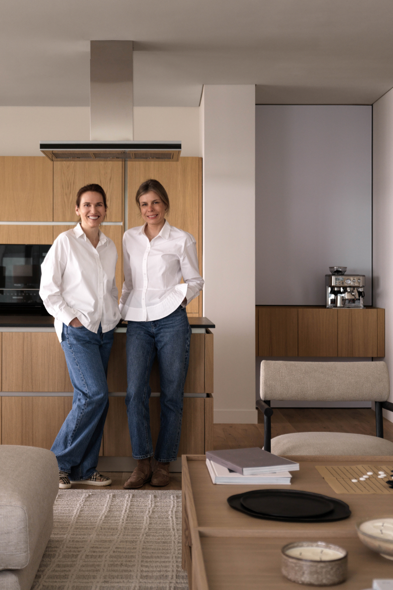
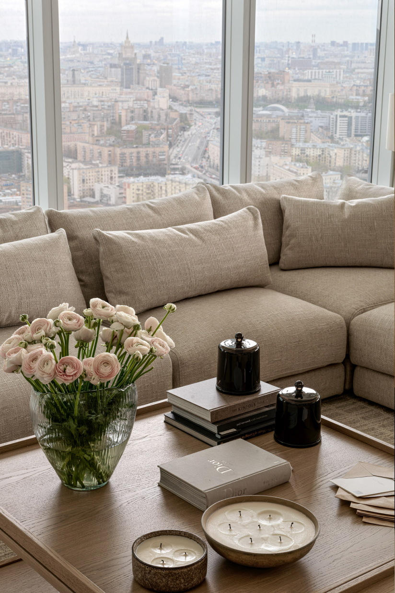
Задачу заказчик сформулировал так, что она сразу стала для нас ориентиром: «Хороший заводской автомобиль, например BMW, — он нравится многим и без индивидуального детейлинга». Поэтому в этих апартаментах нет резких, специфических высказываний и стилистических перегибов — ни в минимализм, ни в классику. Интерьер получился базовым: при желании владелец сможет «докрутить» его в современную или в классическую сторону. Единственное, что здесь не требовало улучшений, — панорамный вид: он был и остался прекрасным.
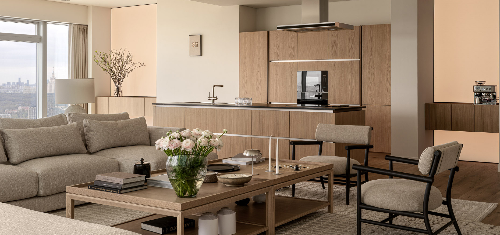
Планировка: точечные изменения вместо капитальных
Капитальную перепланировку не делали сознательно — важны были сроки. Полностью переделали ванные комнаты: двадцать лет назад их планировали по другим нормам, а раз всё равно предстоял полный демонтаж и замена сантехники, логично было привести их к сегодняшним стандартам. Душевое остекление — на скрытом зажимном профиле, в мастер-ванной — единая мокрая зона для душа и ванны, тёплые полы и стены.
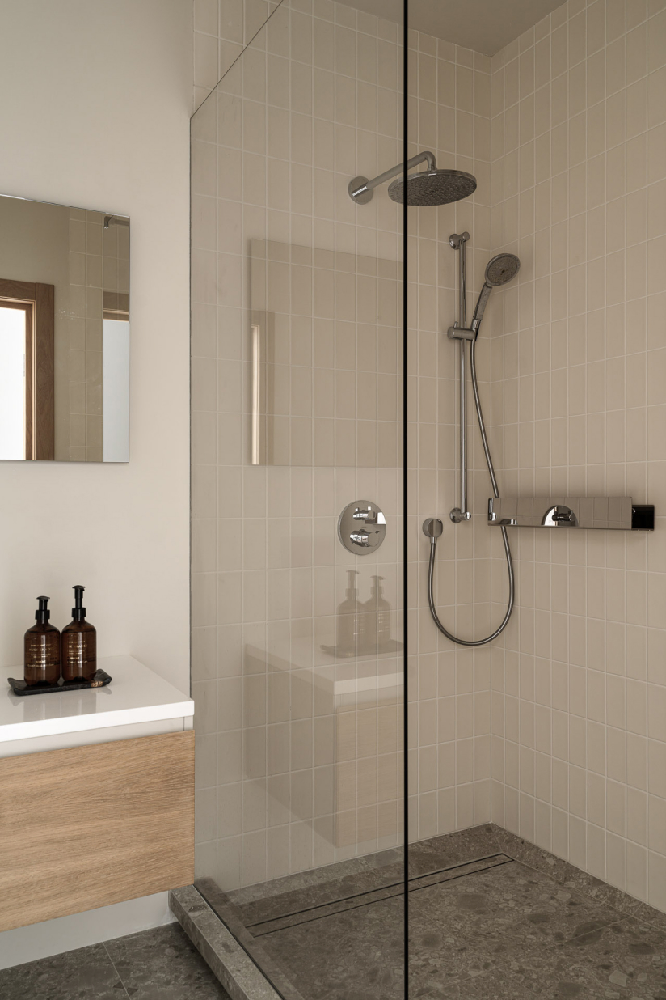
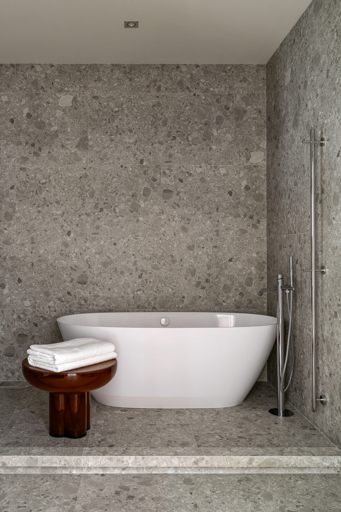
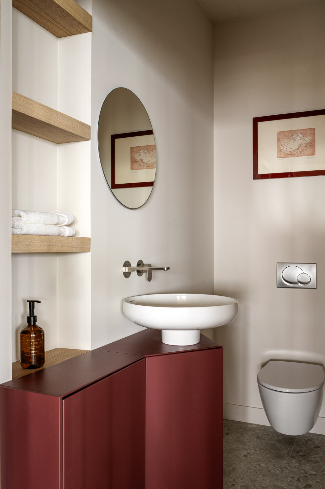
Материалы и мебель: критерий — наличие
Главным условием попадания в сроки стала работа с тем, что есть в наличии: размещать заказы и ждать поставку четыре-пять месяцев мы не могли. Полностью заменили полы, керамогранит, двери, сантехнику и бытовую технику. Самое показательное решение здесь — кухня. Итальянский корпус был хорош, но лаковые фасады за двадцать лет аренды испортились необратимо, а перекраска и реставрация лака оказались бы недолговечными. Сделали новые фасады, сохранив корпус, — компромисс, который на деле оказался рациональнее «идеального» варианта с реставрацией.
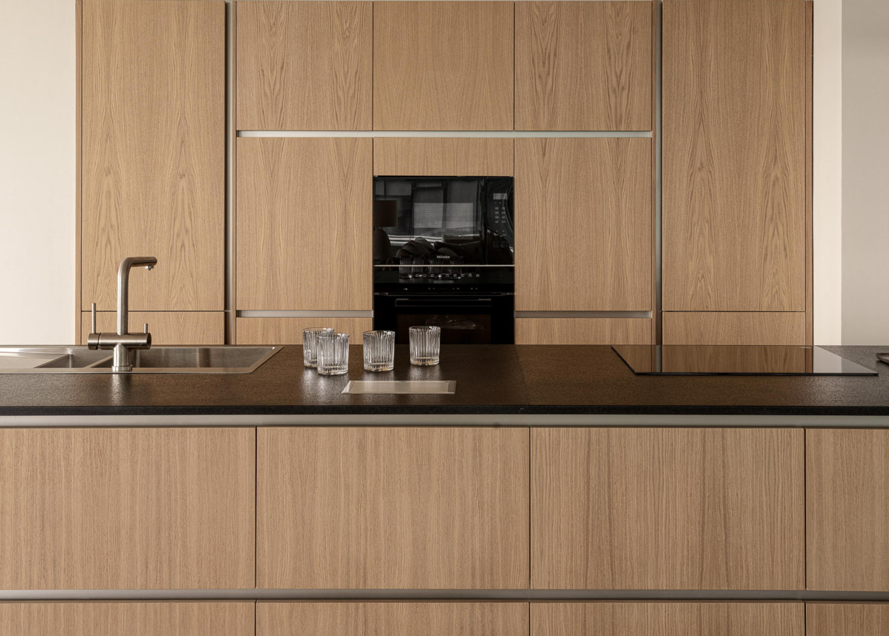
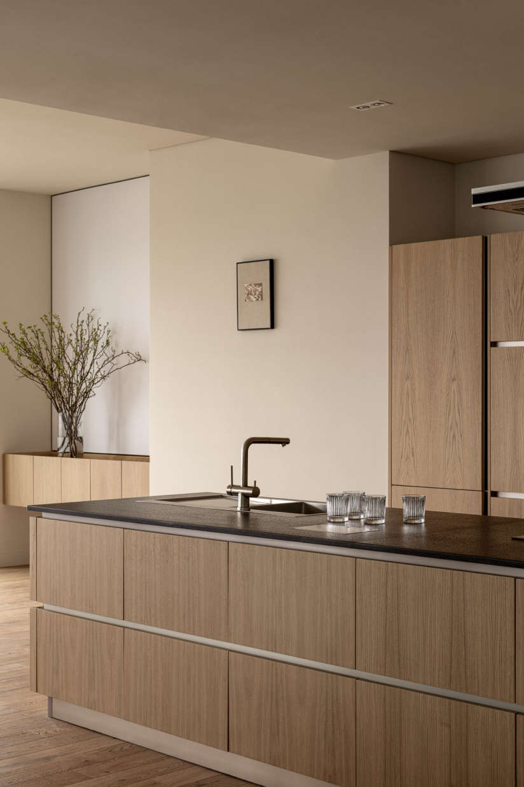
Палитра — тёплые нейтральные тона: светлый дуб, бежевый текстиль, чёрные и металлические акценты в мебели. Такая гамма ничего не навязывает и оставляет свободу: к ней одинаково легко добавить и яркие этнические вещи, и сдержанные классические.
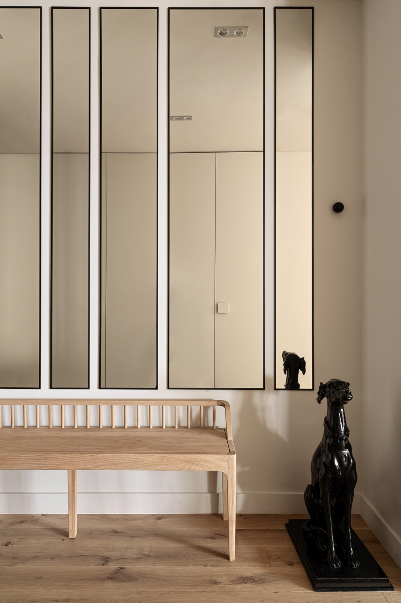
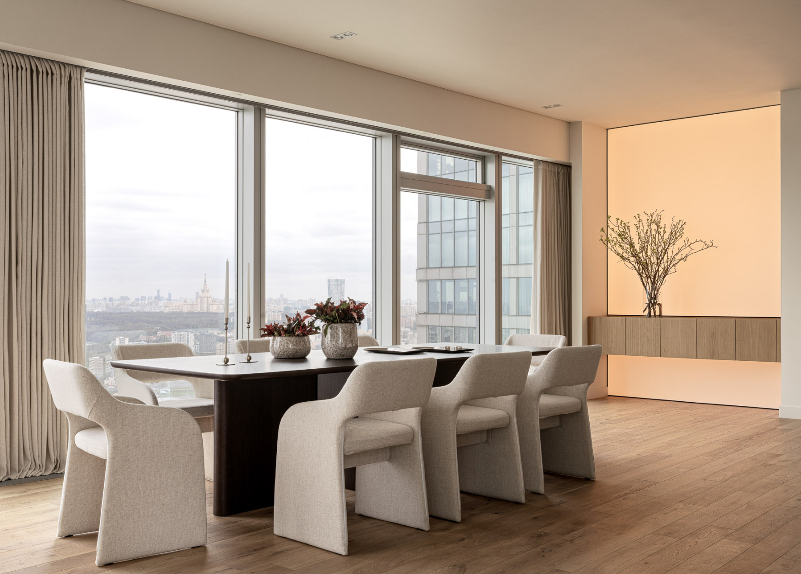
Инженерия и свет
Провели ревизию электрики, добавили управление шторами. Отдельный приём, который во многом задаёт настроение квартиры, — лайт-боксы слева и справа от кухни: они работают одновременно как атмосферное освещение и как арт-объект.